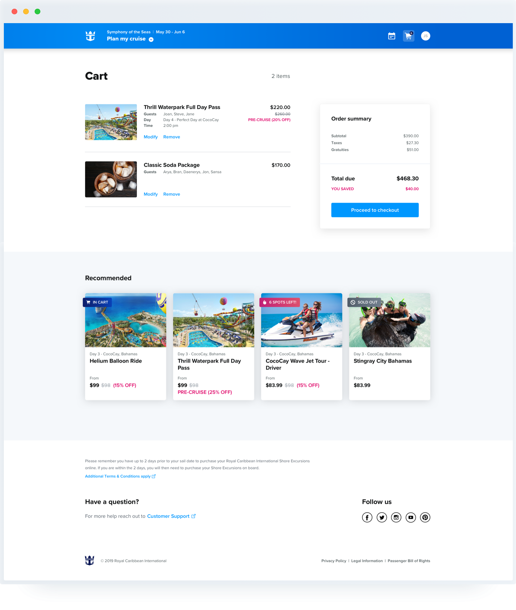
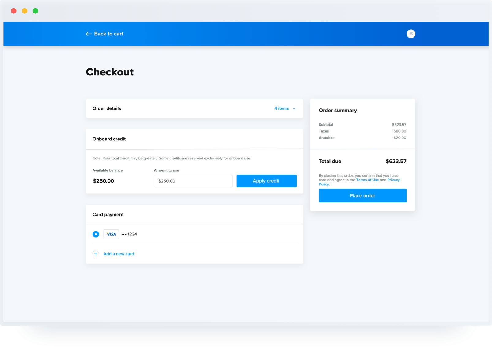
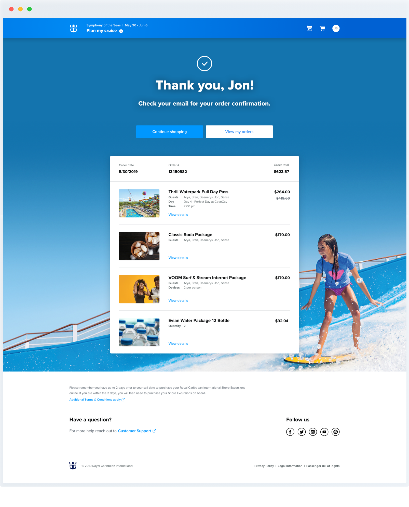
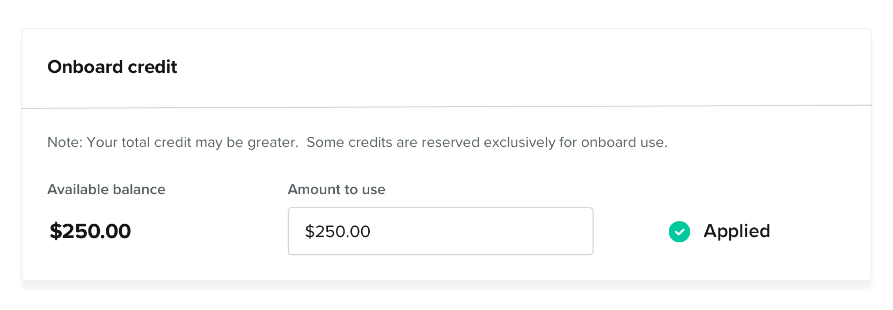
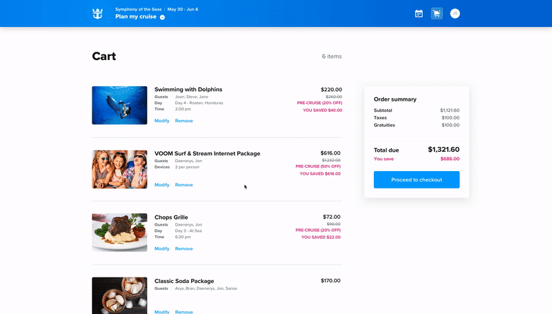
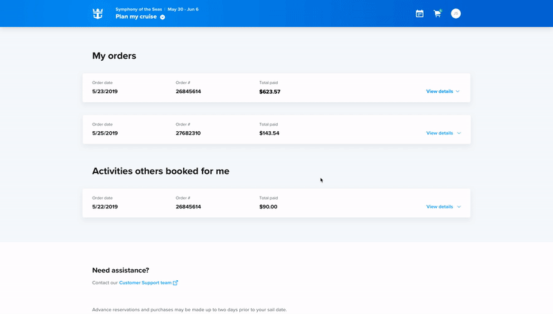

One of the most ambitious yet impactful projects I took on while at Royal Caribbean involved the complete redesign and re-architecture of their Cruise Planner, a massive e-commerce platform where guests can plan and book activities before their cruise.
Working with ever-changing requirements and tight deadlines, I was tasked to own the design of the cart, checkout, and order management features. This included all end-to-end deliverables, including research, wireframes, visual designs, animations, and prototypes.
I also worked closely with other designers on the commerce team to establish a consistent visual language, product owners to align on business requirements, and a copywriter to ensure clear, concise communication that suits Royal Caribbean's branding.
Designing the look and feel for the cart and checkout flows presented a unique challenge. I had conducted so much research on what other successful e-commerce sites were doing, I literally dreamed of shopping carts and checkout flows in my sleep. While the visual design of these features needed to be cohesive with the rest of the Cruise Planner platform, what I had gathered from my research was that it also needed to be a focused experience for the user -- clean and straight-forward.
  On the other hand, what I had also noticed from my research is that most checkout experiences out there end on an anticlimactic note, with a stark confirmation page -- a missed opportunity, in my opinion, for the brand to showcase their personality and get the customer looking forward to their purchase. For this project, I wanted to design a confirmation page that reflected Royal Caribbean's brand as well as the excitement of an upcoming cruise.
I also needed to design for the responsive mobile version of these flows, taking into consideration the same content, but in a much smaller screen size. Below are a few key screens:
Some of the more challenging bits of this project were hashing out the flows and interactions for smaller features, such as redeeming and/or editing credit during checkout:
I also had to consider instances where the user might change their mind, such as removing an item from their cart:
Or canceling an order they had already made:
Overall, this was an intense but rewarding project. There were some next steps or add-ons that I would have loved to see to make the cart, checkout, and order management flows even better:
Thanks for reading!